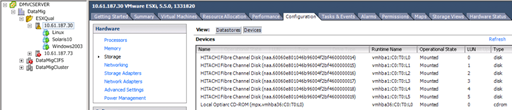
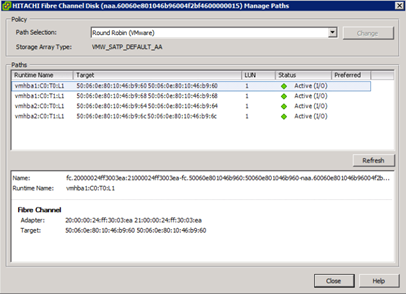

Migrazione SAN con FLI
Migrazione SAN con FLI
Verifica multipath per host ESXi
 Suggerisci modifiche
Suggerisci modifiche
Nell'ambito del processo Foreign LUN Import (FLI), verificare che il multipath sia configurato e funzioni correttamente sugli host.
Completare la seguente procedura per gli host ESXi.
-
Determinare ESXi e la macchina virtuale utilizzando VMware vSphere Client.

-
Determinare le LUN SAN da migrare utilizzando il client vSphere.

-
Determinare i volumi VMFS e RDM (vfat) da migrare:
esxcli storage filesystem listMount Point Volume Name UUID Mounted Type Size Free ------------------------------------------------- ----------------- ----------------------------------- ------- ------ ----------- ----------- /vmfs/volumes/538400f6-3486df59-52e5-00262d04d700 BootLun_datastore 538400f6-3486df59-52e5-00262d04d700 true VMFS-5 13421772800 12486443008 /vmfs/volumes/53843dea-5449e4f7-88e0-00262d04d700 VM_datastore 53843dea-5449e4f7-88e0-00262d04d700 true VMFS-5 42681237504 6208618496 /vmfs/volumes/538400f6-781de9f7-c321-00262d04d700 538400f6-781de9f7-c321-00262d04d700 true vfat 4293591040 4269670400 /vmfs/volumes/c49aad7f-afbab687-b54e-065116d72e55 c49aad7f-afbab687-b54e-065116d72e55 true vfat 261853184 77844480 /vmfs/volumes/270b9371-8fbedc2b-1f3b-47293e2ce0da 270b9371-8fbedc2b-1f3b-47293e2ce0da true vfat 261853184 261844992 /vmfs/volumes/538400ef-647023fa-edef-00262d04d700 538400ef-647023fa-edef-00262d04d700 true vfat 299712512 99147776 ~ #

In caso di VMFS con estensione, è necessario migrare tutte le LUN che fanno parte dell'intervallo. Per visualizzare tutte le estendimenti nella GUI, accedere a Configuration > hardware > Storage e fare clic su datastore per selezionare il collegamento Properties (Proprietà).
Dopo la migrazione, mentre vengono aggiunte nuovamente allo storage, vengono visualizzate più voci LUN con la stessa etichetta VMFS. In questo scenario, chiedere al cliente di selezionare solo la voce contrassegnata come Head.
-
Determinare il LUN e le dimensioni da migrare:
esxcfg-scsidevs -cDevice UID Device Type Console Device Size Multipath PluginDisplay Name mpx.vmhba36:C0:T0:L0 CD-ROM /vmfs/devices/cdrom/mpx.vmhba36:C0:T0:L0 0MB NMP Local Optiarc CD-ROM (mpx.vmhba36:C0:T0:L0) naa.60060e801046b96004f2bf4600000014 Direct-Access /vmfs/devices/disks/naa.60060e801046b96004f2bf4600000014 20480MB NMP HITACHI Fibre Channel Disk (naa.60060e801046b96004f2bf4600000014) naa.60060e801046b96004f2bf4600000015 Direct-Access /vmfs/devices/disks/naa.60060e801046b96004f2bf4600000015 40960MB NMP HITACHI Fibre Channel Disk (naa.60060e801046b96004f2bf4600000015) ~~~~~~ Output truncated ~~~~~~~ ~ #
-
Identificare i LUN RDM (Raw Device Mapping) da migrare.
-
Trova dispositivi RDM:
find /vmfs/volumes -name **-rdm**/vmfs/volumes/53843dea-5449e4f7-88e0-00262d04d700/Windows2003/Windows2003_1-rdmp.vmdk /vmfs/volumes/53843dea-5449e4f7-88e0-00262d04d700/Windows2003/Windows2003_2-rdm.vmdk /vmfs/volumes/53843dea-5449e4f7-88e0-00262d04d700/Linux/Linux_1-rdm.vmdk /vmfs/volumes/53843dea-5449e4f7-88e0-00262d04d700/Solaris10/Solaris10_1-rdmp.vmdk
-
Rimuovere -rdmp e -rdm dall'output precedente ed eseguire il comando vmkfstools per trovare il mapping vml e il tipo RDM.
# vmkfstools -q /vmfs/volumes/53843dea-5449e4f7-88e0-00262d04d700/Windows2003/Windows2003_1.vmdk vmkfstools -q /vmfs/volumes/53843dea-5449e4f7-88e0-00262d04d700/Windows2003/Windows2003_1.vmdk Disk /vmfs/volumes/53843dea-5449e4f7-88e0-00262d04d700/Windows2003/Windows2003_1.vmdk is a Passthrough Raw Device Mapping Maps to: vml.020002000060060e801046b96004f2bf4600000016444636303046 ~ # vmkfstools -q /vmfs/volumes/53843dea-5449e4f7-88e0-00262d04d700/Windows2003/Windows2003_2.vmdk Disk /vmfs/volumes/53843dea-5449e4f7-88e0-00262d04d700/Windows2003/Windows2003_2.vmdk is a Non-passthrough Raw Device Mapping Maps to: vml.020003000060060e801046b96004f2bf4600000017444636303046 ~ # vmkfstools -q /vmfs/volumes/53843dea-5449e4f7-88e0-00262d04d700/Linux/Linux_1.vmdk Disk /vmfs/volumes/53843dea-5449e4f7-88e0-00262d04d700/Linux/Linux_1.vmdk is a Non-passthrough Raw Device Mapping Maps to: vml.020005000060060e801046b96004f2bf4600000019444636303046 ~ # vmkfstools -q /vmfs/volumes/53843dea-5449e4f7-88e0-00262d04d700/Solaris10/Solaris10_1.vmdk Disk /vmfs/volumes/53843dea-5449e4f7-88e0-00262d04d700/Solaris10/Solaris10_1.vmdk is a Passthrough Raw Device Mapping Maps to: vml.020004000060060e801046b96004f2bf4600000018444636303046 ~ #
Passthrough è un RDM con /RDMP fisico e il nonpass-through è un RDM con /RDMV virtuale. Le macchine virtuali con RDM virtuali e copie Snapshot delle macchine virtuali si rompono dopo la migrazione a causa del delta vmdk di snapshot delle macchine virtuali che punta a un RDM con un naa ID obsoleta. Quindi, prima della migrazione, chiedere al cliente di rimuovere tutte le copie Snapshot in tali macchine virtuali. Fare clic con il pulsante destro del mouse su VM e fare clic sul pulsante Snapshot -→ Snapshot Manager Delete All (Elimina tutto). Fare riferimento alla Knowledge base 3013935 di NetApp per i dettagli sul blocco con accelerazione hardware per VMware su storage NetApp.
-
Identificare la mappatura del LUN naa al dispositivo RDM.
~ # esxcfg-scsidevs -u | grep vml.020002000060060e801046b96004f2bf4600000016444636303046 naa.60060e801046b96004f2bf4600000016 vml.020002000060060e801046b96004f2bf4600000016444636303046 ~ # esxcfg-scsidevs -u | grep vml.020003000060060e801046b96004f2bf4600000017444636303046 naa.60060e801046b96004f2bf4600000017 vml.020003000060060e801046b96004f2bf4600000017444636303046 ~ # esxcfg-scsidevs -u | grep vml.020005000060060e801046b96004f2bf4600000019444636303046 naa.60060e801046b96004f2bf4600000019 vml.020005000060060e801046b96004f2bf4600000019444636303046 ~ # esxcfg-scsidevs -u | grep vml.020004000060060e801046b96004f2bf4600000018444636303046 naa.60060e801046b96004f2bf4600000018 vml.020004000060060e801046b96004f2bf4600000018444636303046 ~ #
-
Determinare la configurazione della macchina virtuale:
esxcli storage filesystem list | grep VMFS/vmfs/volumes/538400f6-3486df59-52e5-00262d04d700 BootLun_datastore 538400f6-3486df59-52e5-00262d04d700 true VMFS-5 13421772800 12486443008 /vmfs/volumes/53843dea-5449e4f7-88e0-00262d04d700 VM_datastore 53843dea-5449e4f7-88e0-00262d04d700 true VMFS-5 42681237504 6208618496 ~ #
-
Registrare l'UUID del datastore.
-
Eseguire una copia di
/etc/vmware/hostd/vmInventory.xmle prendere nota del contenuto del file e del percorso di configurazione vmx.~ # cp /etc/vmware/hostd/vmInventory.xml /etc/vmware/hostd/vmInventory.xml.bef_mig ~ # cat /etc/vmware/hostd/vmInventory.xml <ConfigRoot> <ConfigEntry id="0001"> <objID>2</objID> <vmxCfgPath>/vmfs/volumes/53843dea-5449e4f7-88e0-00262d04d700/Windows2003/Windows2003.vmx</vmxCfgPath> </ConfigEntry> <ConfigEntry id="0004"> <objID>5</objID> <vmxCfgPath>/vmfs/volumes/53843dea-5449e4f7-88e0-00262d04d700/Linux/Linux.vmx</vmxCfgPath> </ConfigEntry> <ConfigEntry id="0005"> <objID>6</objID> <vmxCfgPath>/vmfs/volumes/53843dea-5449e4f7-88e0-00262d04d700/Solaris10/Solaris10.vmx</vmxCfgPath> </ConfigEntry> </ConfigRoot> -
Identificare i dischi rigidi della macchina virtuale.
Queste informazioni sono necessarie dopo la migrazione per aggiungere i dispositivi RDM rimossi in ordine.
~ # grep fileName /vmfs/volumes/53843dea-5449e4f7-88e0-00262d04d700/Windows2003/Windows2003.vmx scsi0:0.fileName = "Windows2003.vmdk" scsi0:1.fileName = "Windows2003_1.vmdk" scsi0:2.fileName = "Windows2003_2.vmdk" ~ # grep fileName /vmfs/volumes/53843dea-5449e4f7-88e0-00262d04d700/Linux/Linux.vmx scsi0:0.fileName = "Linux.vmdk" scsi0:1.fileName = "Linux_1.vmdk" ~ # grep fileName /vmfs/volumes/53843dea-5449e4f7-88e0-00262d04d700/Solaris10/Solaris10.vmx scsi0:0.fileName = "Solaris10.vmdk" scsi0:1.fileName = "Solaris10_1.vmdk" ~ #
-
Determinare il dispositivo RDM, la mappatura delle macchine virtuali e la modalità di compatibilità.
-
Utilizzando le informazioni precedenti, prendere nota della mappatura RDM al dispositivo, alla macchina virtuale, alla modalità di compatibilità e all'ordine.
Queste informazioni saranno necessarie in seguito, quando si aggiungono dispositivi RDM alla macchina virtuale.
Virtual Machine -> Hardware -> NAA -> Compatibility mode Windows2003 VM -> scsi0:1.fileName = "Windows2003_1.vmdk" -> naa.60060e801046b96004f2bf4600000016 -> RDM Physical Windows2003 VM -> scsi0:2.fileName = "Windows2003_2.vmdk" -> naa.60060e801046b96004f2bf4600000017 -> RDM Virtual Linux VM -> scsi0:1.fileName = “Linux_1.vmdk” -> naa.60060e801046b96004f2bf4600000019 -> RDM Virtual Solaris10 VM -> scsi0:1.fileName = “Solaris10_1.vmdk” -> naa.60060e801046b96004f2bf4600000018 -> RDM Physical
-
Determinare la configurazione multipath.
-
Ottenere le impostazioni multipath per lo storage nel client vSphere:
-
Selezionare un host ESX o ESXi in vSphere Client e fare clic sulla scheda Configuration (Configurazione).
-
Fare clic su Storage.
-
Selezionare un datastore o un LUN mappato.
-
Fare clic su Proprietà.
-
Nella finestra di dialogo Proprietà, selezionare l'estensione desiderata, se necessario.
-
Fare clic su dispositivo estensione > Gestisci percorsi e ottenere i percorsi nella finestra di dialogo Gestisci percorso.

-
-
Ottenere informazioni sul multipathing LUN dalla riga di comando dell'host ESXi:
-
Accedere alla console host di ESXi.
-
Eseguire esxcli storage nmp device list per ottenere informazioni multipath.
# esxcli storage nmp device list naa.60060e801046b96004f2bf4600000014 Device Display Name: HITACHI Fibre Channel Disk (naa.60060e801046b96004f2bf4600000014) Storage Array Type: VMW_SATP_DEFAULT_AA Storage Array Type Device Config: SATP VMW_SATP_DEFAULT_AA does not support device configuration. Path Selection Policy: VMW_PSP_RR Path Selection Policy Device Config: {policy=rr,iops=1000,bytes=10485760,useANO=0; lastPathIndex=3: NumIOsPending=0,numBytesPending=0} Path Selection Policy Device Custom Config: Working Paths: vmhba2:C0:T1:L0, vmhba2:C0:T0:L0, vmhba1:C0:T1:L0, vmhba1:C0:T0:L0 Is Local SAS Device: false Is Boot USB Device: false naa.60060e801046b96004f2bf4600000015 Device Display Name: HITACHI Fibre Channel Disk (naa.60060e801046b96004f2bf4600000015) Storage Array Type: VMW_SATP_DEFAULT_AA Storage Array Type Device Config: SATP VMW_SATP_DEFAULT_AA does not support device configuration. Path Selection Policy: VMW_PSP_RR Path Selection Policy Device Config: {policy=rr,iops=1000,bytes=10485760,useANO=0; lastPathIndex=0: NumIOsPending=0,numBytesPending=0} Path Selection Policy Device Custom Config: Working Paths: vmhba2:C0:T1:L1, vmhba2:C0:T0:L1, vmhba1:C0:T1:L1, vmhba1:C0:T0:L1 Is Local SAS Device: false Is Boot USB Device: false naa.60060e801046b96004f2bf4600000016 Device Display Name: HITACHI Fibre Channel Disk (naa.60060e801046b96004f2bf4600000016) Storage Array Type: VMW_SATP_DEFAULT_AA Storage Array Type Device Config: SATP VMW_SATP_DEFAULT_AA does not support device configuration. Path Selection Policy: VMW_PSP_RR Path Selection Policy Device Config: {policy=rr,iops=1000,bytes=10485760,useANO=0; lastPathIndex=1: NumIOsPending=0,numBytesPending=0} Path Selection Policy Device Custom Config: Working Paths: vmhba2:C0:T1:L2, vmhba2:C0:T0:L2, vmhba1:C0:T1:L2, vmhba1:C0:T0:L2 Is Local SAS Device: false Is Boot USB Device: false naa.60060e801046b96004f2bf4600000017 Device Display Name: HITACHI Fibre Channel Disk (naa.60060e801046b96004f2bf4600000017) Storage Array Type: VMW_SATP_DEFAULT_AA Storage Array Type Device Config: SATP VMW_SATP_DEFAULT_AA does not support device configuration. Path Selection Policy: VMW_PSP_RR Path Selection Policy Device Config: {policy=rr,iops=1000,bytes=10485760,useANO=0; lastPathIndex=1: NumIOsPending=0,numBytesPending=0} Path Selection Policy Device Custom Config: Working Paths: vmhba2:C0:T1:L3, vmhba2:C0:T0:L3, vmhba1:C0:T1:L3, vmhba1:C0:T0:L3 Is Local SAS Device: false Is Boot USB Device: false naa.60060e801046b96004f2bf4600000018 Device Display Name: HITACHI Fibre Channel Disk (naa.60060e801046b96004f2bf4600000018) Storage Array Type: VMW_SATP_DEFAULT_AA Storage Array Type Device Config: SATP VMW_SATP_DEFAULT_AA does not support device configuration. Path Selection Policy: VMW_PSP_RR Path Selection Policy Device Config: {policy=rr,iops=1000,bytes=10485760,useANO=0; lastPathIndex=1: NumIOsPending=0,numBytesPending=0} Path Selection Policy Device Custom Config: Working Paths: vmhba2:C0:T1:L4, vmhba2:C0:T0:L4, vmhba1:C0:T1:L4, vmhba1:C0:T0:L4 Is Local SAS Device: false Is Boot USB Device: false naa.60060e801046b96004f2bf4600000019 Device Display Name: HITACHI Fibre Channel Disk (naa.60060e801046b96004f2bf4600000019) Storage Array Type: VMW_SATP_DEFAULT_AA Storage Array Type Device Config: SATP VMW_SATP_DEFAULT_AA does not support device configuration. Path Selection Policy: VMW_PSP_RR Path Selection Policy Device Config: {policy=rr,iops=1000,bytes=10485760,useANO=0; lastPathIndex=1: NumIOsPending=0,numBytesPending=0} Path Selection Policy Device Custom Config: Working Paths: vmhba2:C0:T1:L5, vmhba2:C0:T0:L5, vmhba1:C0:T1:L5, vmhba1:C0:T0:L5 Is Local SAS Device: false Is Boot USB Device: false
-